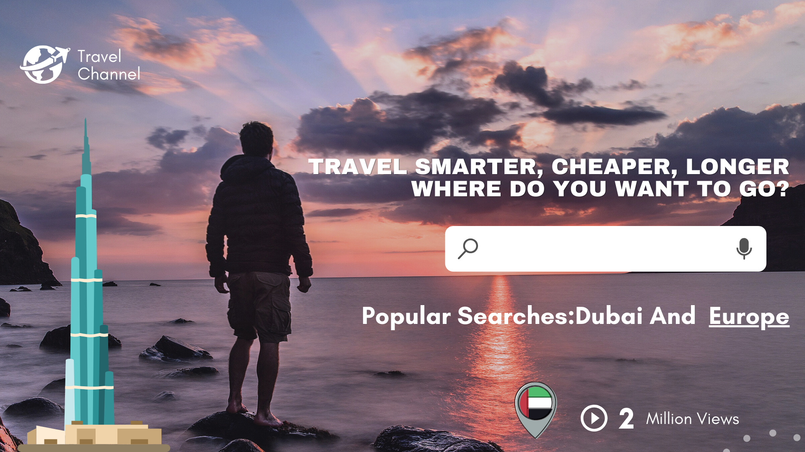
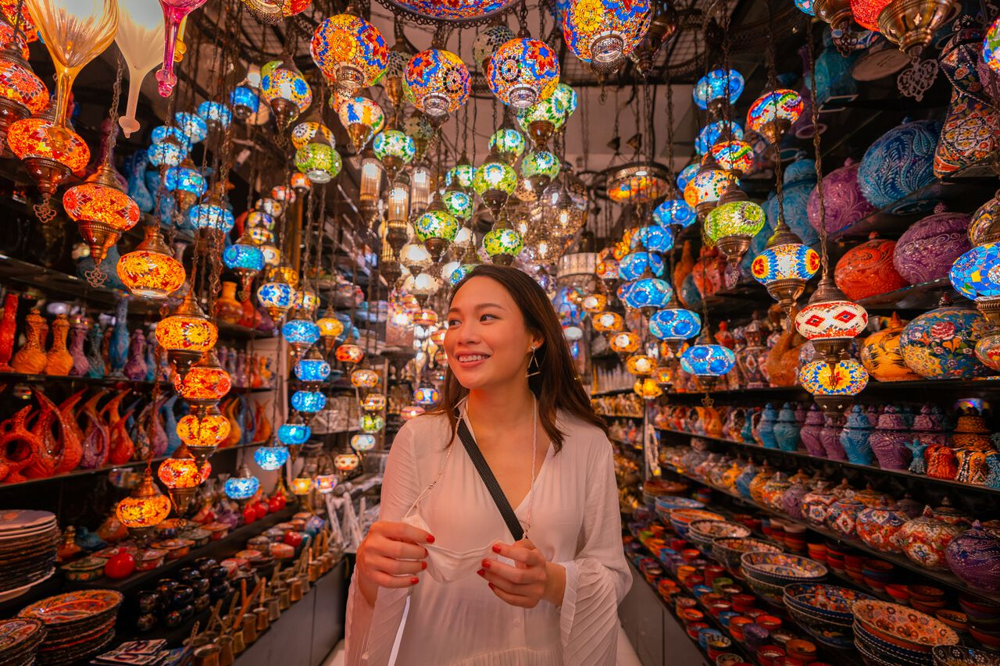
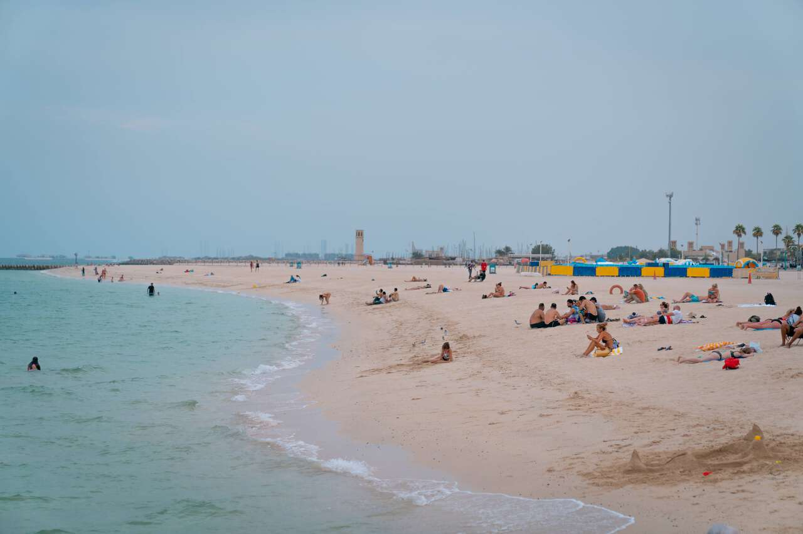
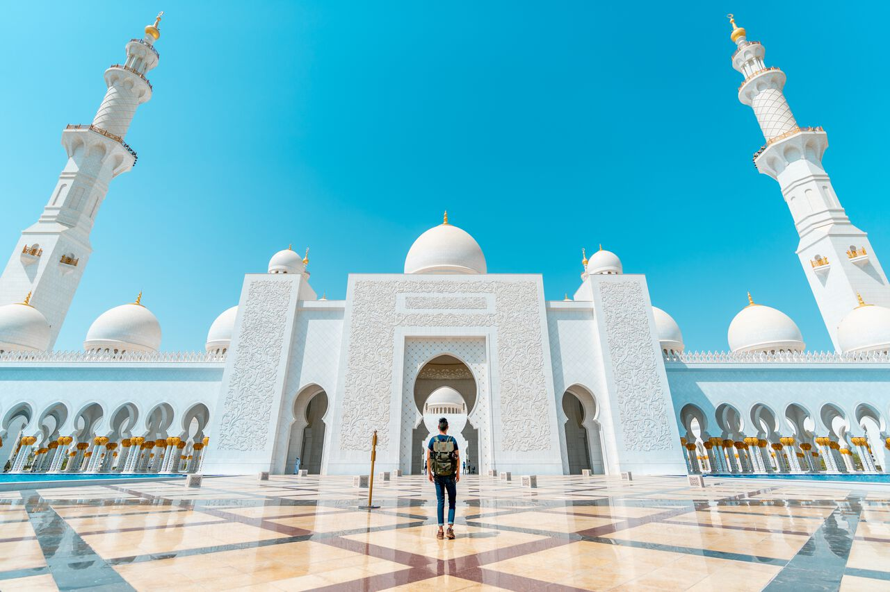

MEET ZAHID KHAN


.jpg)
.jpg)
Hi! I’m Zahid khan . I’m here to help you explore this planet safely, adventurously, and affordably. It was back in 2022 when I quit my job to travel the world. Twelve years, 100-odd countries, and one successful travel blog later, I’m still going. This website is the result of tens of thousands of hours of on-the-ground research. I pay for all my travels myself, don’t take sponsored trips, and travel anonymously; all to ensure my recommendations are ones you can trust.


.jpg)
.jpg)
LATEST ARTICLES ABOUT DUBIA
Museums And Desert Safaris |
Beach Day |
Mosque of Sheikh Zayed Bin Sultan the First |
| style="width: 200px; text-align: center;"  |  |  |
| On your first day in Dubai, you are going to see the side of the city that is not usually seen in media by visiting the beautiful old town area and learning a bit more about the interesting history of how the metropolitan in the middle of a desert came to be. | After a long day the day before, we are going to take it slow with a beach day at either La Mer Beach or Kite Beach on our second day. Both are great beaches that cater to different crowds. | One of the greatest attractions in Abu Dhabi is, of course, the massive Mosque of Sheikh Zayed Bin Sultan the First, which is considered to be one of the most impressive mosques in the world and a must-visit while you are here. |